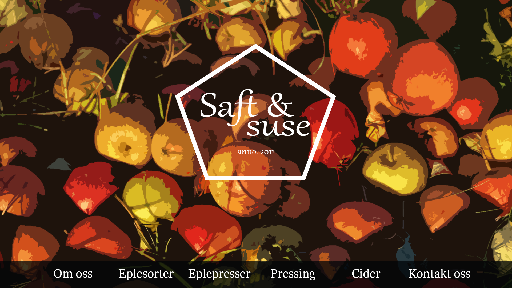
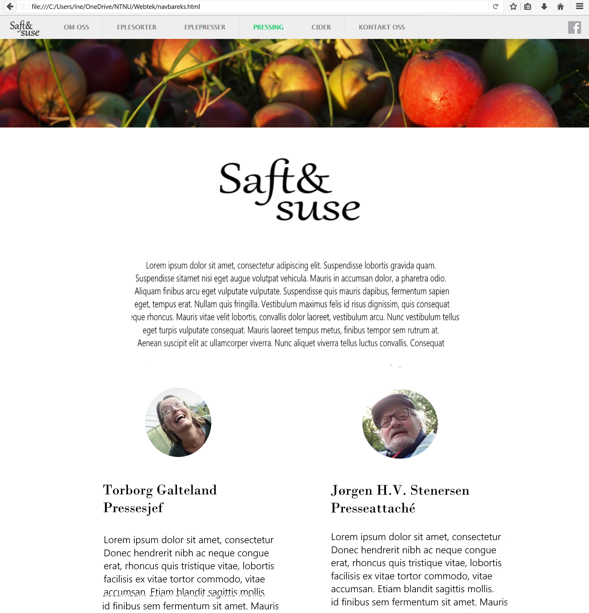
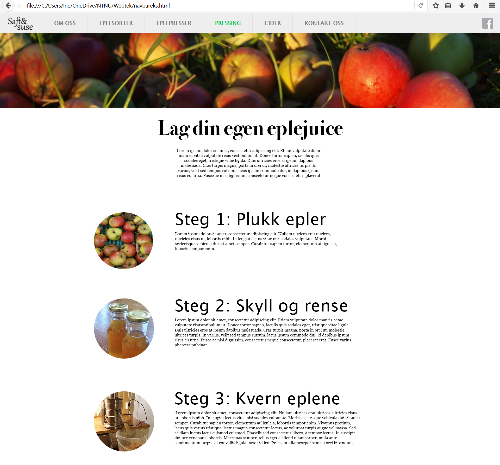
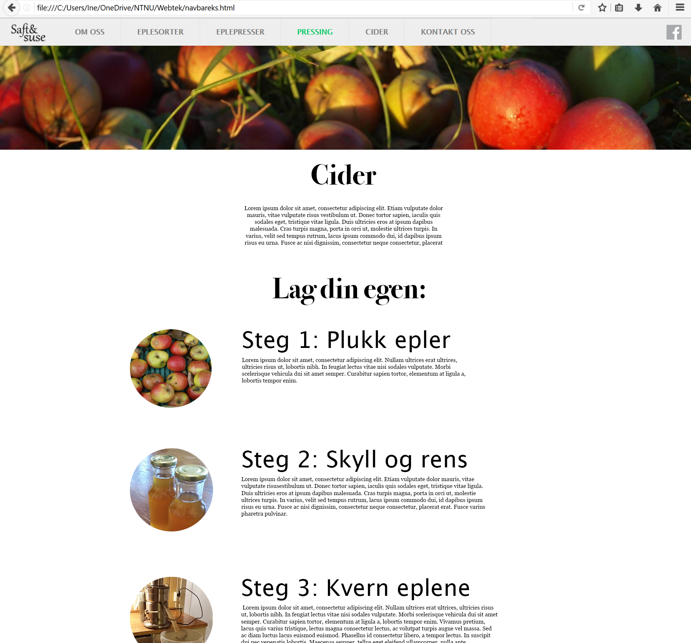

Contents of the webpage
1. Landing page
The landing page will contain the logo, stylised navigational menu and an apple-themed picture. The menu will have a small image relevant to the page. Clicking any of these images plays an animation (JavaScript) where the image fills the screen and the appropate page fades in.
2. About us
The page is topped by a logo or a picture representing Saft og Suse and a paragraph of text about the group.
Below the general description the there will be two colums with an image of, and paragraph about the two people running S&S.
At hte bottom of this page there will be a slideshow of images run by JavaScript
3. Kinds of apples

This page will have a series of pictures of different types of apples with text beside them. The text will contain info about the apple type’s taste, texture, how they work for juicing, etc. The images will expand on click, allowing the user to look closer at them. This will be achieved with JavaScript.
The goal of this page is to give the user some handy tips as to which apples they might want to use themselves if they decide to try out juicing for themselves.
4. Presses

Firstly there will be a paragraph about apple-presses, and a JS-powered illustration of a press. Mouseover or clicking on the illustration will bring up information about the different parts.

Further down there will be an info section where we talk about four different kinds of presses
The navbar will have a special dropdown menu with two items; Info and Build. Info will take you to the start of the introduction. and build to the start of the how to build your own section.
The goal of this page will be to present these different presses in an orderly fashion, allowing the user to get an overview and find out which one is suitable to use.
The overall styling will be the same as with other pages, as all these pages use the same CSS document. The layout will be very similar to for example the “Kinds of Apples”-page, as the type of information is around the same. That is, both pages are meant to give an overview and information about a different variations of a thing.
5. The Juicing Process
This page will contain a step-by-step guide with accompanying pictures that explains how to make your own homemade apple juice. This page will fulfill the client’s goal of teaching other people how to press apples. Below the menu bar and the banner there will be a title and a short introduction to apple pressing. Each of the different steps in the process will be described in a short paragraph. There will also be an accompanying picture (shaped as a circle) illustrating each step. As we want to make sure the guide is easy to follow, the instructions will be numbered and kept as the focus of the page.
6. Cider
This page will look similar to the previous page about how to make apple juice, but will instead focus on how to brew cider. A short introduction about cider and what it is will be included at the top of the page, before a step-by-step guide will explain how to brew cider. As with the previous page, accompanying pictures will ensure that the the guide is easy to follow.
7. Contact
This page will contain the contact information (e-mail address, phone number) to Saft og Suse as well as a contact form where users can write messages directly to Saft og Suse’s e-mail.
This page will fulfill the goal of letting people who are interested in apple pressing get in touch with the group. As we want users to be able to easily find information we will keep the page simplistic with no long paragraphs of text.